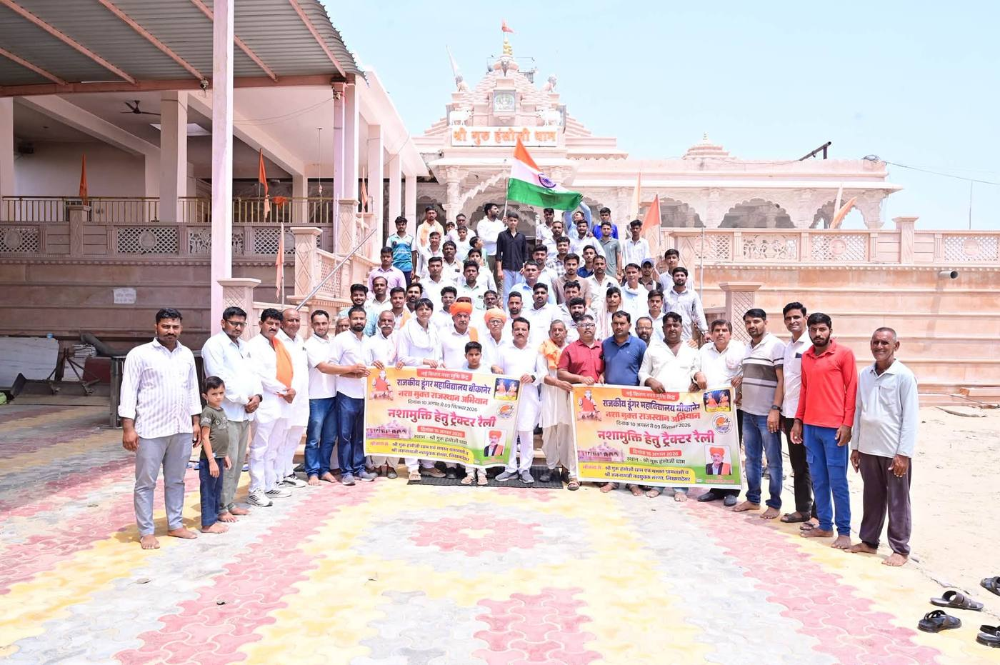
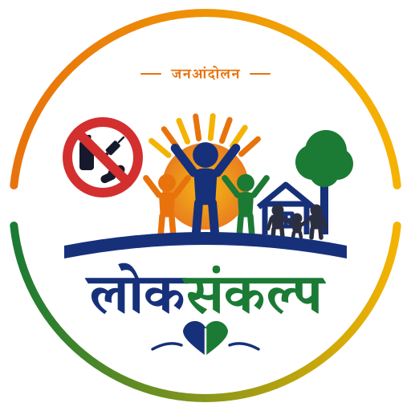
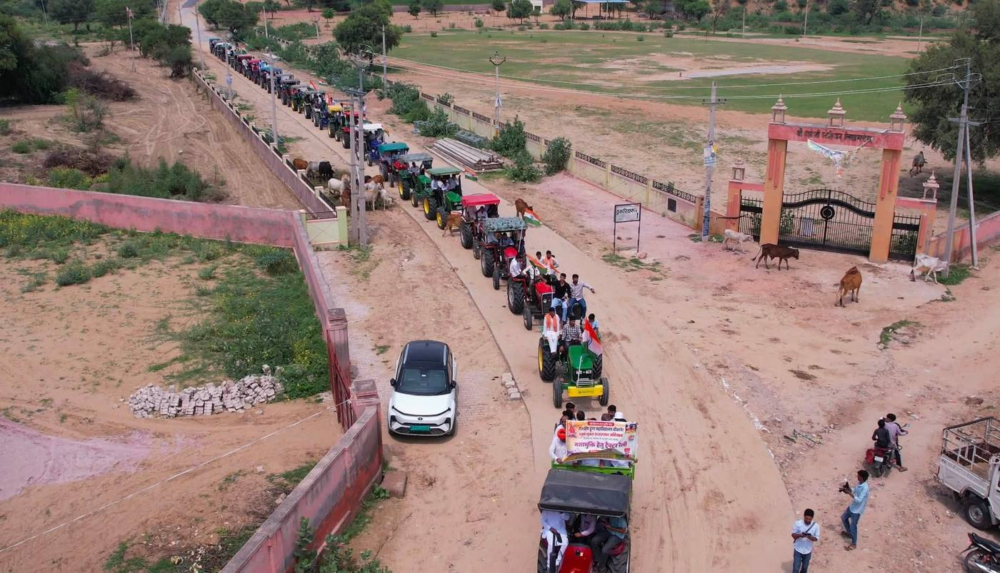
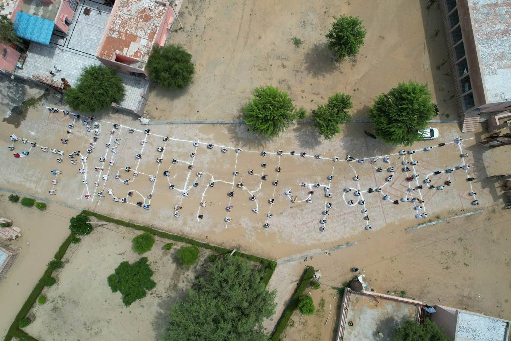
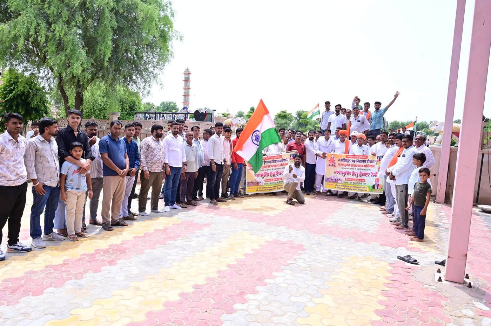
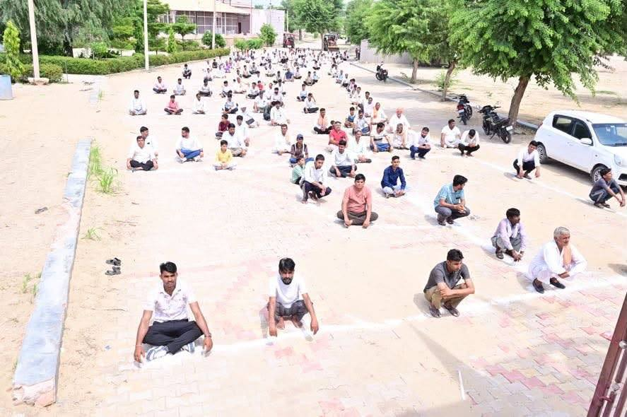

लोकसंकल्प
नशे की सामाजिक स्वीकृति के विरुद्ध जनआंदोलन
“नशे को नहीं,
संस्कारों को सामाजिक स्वीकृति”
- संकल्प
- सहभागिता
- संवाद
- परिवर्तन
लोकसंकल्प क्या है?
व्यक्ति नहीं, नशा समस्या है — और उसे स्वीकृति देने वाली सोच भी
लोकसंकल्प नशे की सामाजिक स्वीकृति के विरुद्ध एक जनभागीदारी आधारित सामाजिक आंदोलन है। इसका उद्देश्य केवल नशा छोड़ने के लिए प्रेरित करना नहीं, बल्कि उन सामाजिक प्रवृत्तियों, परंपराओं और व्यवहारों में परिवर्तन लाना है जो प्रत्यक्ष या अप्रत्यक्ष रूप से नशे को सामाजिक स्वीकार्यता प्रदान करते हैं।
यह अभियान शिक्षकों, विद्यार्थियों, अभिभावकों, पंचायतों, महिलाओं, युवाओं और समाज के सभी वर्गों को एक साझा मंच पर लाकर स्वस्थ, जागरूक, संस्कारित और नशामुक्त समाज के निर्माण का प्रयास करता है।
हमारा संदेश — “नशे को नहीं, संस्कारों को सामाजिक स्वीकृति।”
“नशा परोसना बंद करो, संस्कार परोसना शुरू करो।”
परिवर्तन की यात्रा
- संकल्प — व्यक्ति स्वयं से शुरुआत करता है।
- सहभागिता — गाँव, विद्यालय और परिवार जुड़ते हैं।
- संवाद — ग्राम सभा और अभिभावक संवाद चलते हैं।
- परिवर्तन — आयोजन नशामुक्त होते हैं, कहानियाँ बनती हैं।
अब तक का प्रभाव
आंदोलन कितना बड़ा हो चुका है
यह आँकड़े ग्राम समितियों और शिक्षकों द्वारा भेजी गई रिपोर्ट पर आधारित हैं।
आँकड़े placeholder हैं — डैशबोर्ड से जुड़ने पर स्वतः अपडेट होंगे
आधार
लोकसंकल्प के चार स्तंभ
सामाजिक स्वीकृति का अंत
नशे को परंपरा, प्रतिष्ठा, मनोरंजन और मनुहार से अलग करना।
Good Parenting
परिवार को नशामुक्त समाज की पहली इकाई बनाना।
शिक्षक नेतृत्व
विद्यालयों को सामाजिक परिवर्तन का केंद्र बनाना।
उपचार एवं पुनर्वास
नशे की गिरफ्त में आए लोगों को सम्मानजनक सहायता उपलब्ध कराना।
मेरा संकल्प
आज ही लोकसंकल्प से जुड़ें
सामाजिक परिवर्तन की शुरुआत व्यक्तिगत संकल्प से होती है। जब व्यक्ति बदलता है तो परिवार बदलता है, परिवार बदलता है तो समाज बदलता है।
- मैं स्वयं किसी भी प्रकार के नशे से दूर रहूँगा/रहूँगी।
- अपने परिवार एवं मित्रों को नशे से दूर रहने के लिए प्रेरित करूँगा/करूँगी।
- नशे की सामाजिक स्वीकृति का समर्थन नहीं करूँगा/करूँगी।
- अपने सामाजिक आयोजनों को नशामुक्त बनाने का प्रयास करूँगा/करूँगी।
- बच्चों एवं युवाओं के लिए सकारात्मक वातावरण तैयार करने में योगदान दूँगा/दूँगी।
मेरा संकल्प – मेरा योगदान – नशामुक्त समाज।
डिजिटल प्रमाणपत्र
लोकसंकल्प प्रमाणपत्र
यह प्रमाणित किया जाता है कि
आपका नामने नशामुक्त समाज के निर्माण हेतु लोकसंकल्प लिया।
संकल्प लेते ही तुरंत डाउनलोड
Good Parenting केंद्र
नशामुक्त पीढ़ी की पहली पाठशाला — परिवार
बच्चे सबसे पहले अपने परिवार से सीखते हैं। वे केवल हमारी बातें नहीं सुनते, बल्कि हमारे व्यवहार को भी देखते हैं।
संवाद + विश्वास + समय + सकारात्मक उदाहरण + सजगता
“बच्चों की निगरानी नहीं, बच्चों के जीवन में सकारात्मक उपस्थिति आवश्यक है।”
Good Parenting के 5 सूत्र
- समय दें — दिन में कुछ समय केवल बच्चों के लिए।
- संवाद करें — डाँट से नहीं, बातचीत से।
- संगति जानें — बच्चों के मित्रों को पहचानें।
- विश्वास बनाएँ — भय या दंड नहीं, भरोसा।
- समय रहते सहायता लें — संकोच न करें।
ग्राम लोकसंकल्प सभा
गाँव से शुरू होगा परिवर्तन
प्रत्येक गाँव में शिक्षक, विद्यार्थी, अभिभावक, पंचायत प्रतिनिधि, महिला समूह और युवा एकत्रित होकर सामूहिक संवाद और संकल्प लेते हैं।
ग्राम सभा के उद्देश्य
- नशे के सामाजिक दुष्प्रभावों पर संवाद।
- Good Parenting को बढ़ावा।
- सकारात्मक संगति के महत्व पर चर्चा।
- नशामुक्त सामाजिक आयोजनों का संकल्प।
- ग्राम लोकसंकल्प समिति का गठन।

राजस्थान — जिलेवार प्रगति
जिले पर क्लिक करने पर सभाओं, समितियों और संकल्पों की संख्या दिखेगी।
इंटरैक्टिव मानचित्र — डैशबोर्ड में उपलब्ध
सफलता कहानी मंच
परिवर्तन की प्रेरक कहानियाँ
सामाजिक परिवर्तन केवल विचारों से नहीं, उदाहरणों से भी आगे बढ़ता है।
नशा मुक्ति सहायता केंद्र
मदद माँगना कमजोरी नहीं, साहस है
नशे की समस्या से जूझ रहे व्यक्ति को सामाजिक कलंक नहीं, बल्कि सहयोग, उपचार और सम्मान की आवश्यकता होती है।
मैं नशा छोड़ना चाहता हूँ
पहला कदम यहीं से।
परिवार के सदस्य के लिए
अपनों की मदद कैसे करें।
काउंसलिंग चाहिए
गोपनीय परामर्श सुविधा।
नजदीकी केंद्र
अपने जिले का केंद्र खोजें।
हमारा संदेश — “व्यक्ति नहीं, नशा समस्या है।”
शिक्षक परिवर्तन नेटवर्क
शिक्षक केवल ज्ञान के वाहक नहीं, बल्कि सामाजिक परिवर्तन के निर्माता हैं। एक शिक्षक की पहल सैकड़ों परिवारों का भविष्य बदल सकती है।
- शिक्षक जुड़ें एवं प्रशिक्षण सामग्री
- वेबिनार एवं श्रेष्ठ पहल
- विद्यालय की गतिविधियाँ साझा करें
युवा शक्ति मंच
युवाओं को केवल नशे से दूर रहने की सलाह देना पर्याप्त नहीं है। उन्हें सकारात्मक विकल्प उपलब्ध कराना भी आवश्यक है।
- खेल, कला और पर्यावरण
- नेतृत्व एवं कौशल विकास
- स्वयंसेवा एवं प्रतियोगिताएँ
ज्ञान एवं संसाधन केंद्र
पोस्टर, पुस्तिका, भाषण सामग्री, ग्राम सभा गाइड और Good Parenting गाइड — निःशुल्क डाउनलोड करें।
लोकसंकल्प डैशबोर्ड
राज्य → जिला → ब्लॉक → गाँव, हर स्तर पर अभियान की पारदर्शी प्रगति।
सम्मान एवं प्रेरणा
ग्राम, शिक्षक, विद्यालय, युवा क्लब और परिवार सम्मान — अच्छे कार्यों को पहचान।
अभियान की झलक
गाँव-गाँव में लोकसंकल्प
ग्राम सभा, ट्रैक्टर रैली, सामूहिक संकल्प और विद्यालयों की भागीदारी — कुछ दृश्य।






हमारा सामूहिक संदेश
घर में संस्कार, विद्यालय में संवाद, मित्रता में सकारात्मकता, समाज में जिम्मेदारी, आयोजनों में नशामुक्ति, और जरूरतमंद के लिए उपचार एवं सहयोग — यही लोकसंकल्प है।मेरा गाँव – मेरा परिवार – मेरा संकल्प – नशामुक्त समाज।